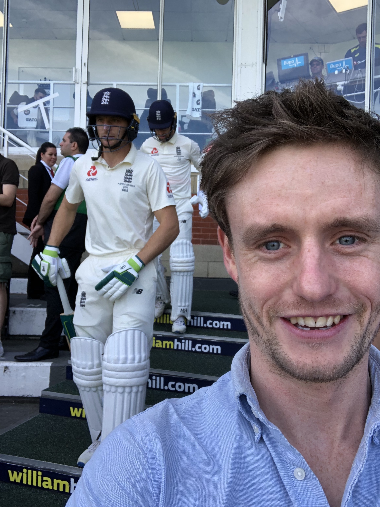

First day of the Ashes 2019 at Edgebaston

Old Trafford in the sunshine for the ashes test 2019

Alex with Joss Buttler at the Oval
Cricket is a bat-and-ball game played between two teams of eleven players on a field at the centre of which is a 20-metre (22-yard) pitch with a wicket at each end, each comprising two bails balanced on three stumps. The batting side scores runs by striking the ball bowled at the wicket with the bat, while the bowling and fielding side tries to prevent this and dismiss each player (so they are "out"). Means of dismissal include being bowled, when the ball hits the stumps and dislodges the bails, and by the fielding side catching the ball after it is hit by the bat, but before it hits the ground. When ten players have been dismissed, the innings ends and the teams swap roles. The game is adjudicated by two umpires, aided by a third umpire and match referee in international matches. They communicate with two off-field scorers who record the match's statistical information.
Alex played a few games of cricket when he was younger but really took it up in the second year of university by joining the University of Manchester cricket club. He was the wicket keeper in this year and then switched to bowling as he enjoyed it more.
Alex is a keen fan for watching cricket, he regularly attends the oval in london to watch Surrey in the t20. He was there when England won the ashes in 2005.
In 2019 he was very lucky to enjoy a large amount of Ashes cricket. He went to the first day of the Ashes at Edgebaston. He also went to the Friday of the Test match at Old Trafford which was the best day as it was very rowdy see the video of the pineapple. He also went to the Friday of the test match at the Oval.